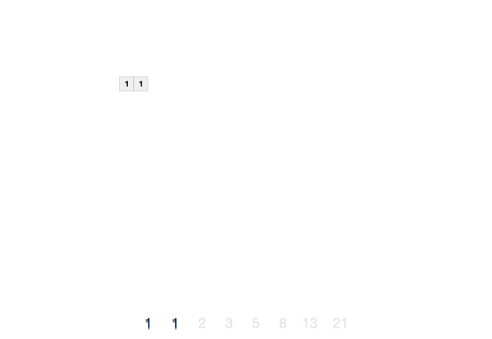

斐波那契数列（递归+源码+注释）
公元 1202 年，意大利数学家莱昂纳多·斐波那契提出了具备以下特征的数列：
如下就是一个斐波那契数列：
很多编程题目要求我们输出指定长度的斐波那契数列，比如输出长度为 6 的斐波那契数列：
如果我们想输出长度为 L 的斐波那契数列，需要调用 L 次 fibonacci() 函数。如下是输出斐波那契数列的 C 语言程序：
如下是输出斐波那契数列的 Java 程序：
如下是输出斐波那契数列的 Python 程序：
以上程序的执行结果都是：
- 前两个数的值分别为 0 、1 或者 1、1；
- 从第 3 个数字开始，它的值是前两个数字的和；
如下就是一个斐波那契数列：
1 1 2 3 5 8 13 21 34......
下面的动画展示了斐波那契数列的生成过程：

图 1 斐波那契数列
图 1 斐波那契数列
很多编程题目要求我们输出指定长度的斐波那契数列，比如输出长度为 6 的斐波那契数列：
1 1 2 3 5 8。接下来，我们教大家如何用递归算法解决这个问题。
递归生成斐波那契数列
如下是一个伪代码形式的递归函数（方法），它可以输出斐波那契数列中指定位置处的数字：
fibonacci(n): // n 表示求数列中第 n 个位置上的数的值
if n == 1: // 设置结束递归的限制条件
return 1
if n == 2: // 设置结束递归的限制条件
return 1
return fibonacci(n-1) + fibonacci(n-2) // F(n) = F(n-1) + F(n-2)
如果我们想输出长度为 L 的斐波那契数列，需要调用 L 次 fibonacci() 函数。如下是输出斐波那契数列的 C 语言程序：
#include <stdio.h>
// index 表示求数列中第 index 个位置上的数的值
int fibonacci(int index) {
// 设置结束递归的限制条件
if (index == 1 || index == 2) {
return 1;
}
// F(index) = F(index-1) + F(index-2)
return fibonacci(index - 1) + fibonacci(index - 2);
}
int main()
{
int i;
// 输出前 10 个数
for (i = 1; i <= 10; i++) {
printf("%d ", fibonacci(i));
}
return 0;
}
如下是输出斐波那契数列的 Java 程序：
public class Demo {
// index 表示求数列中第 index 个位置上的数的值
public static int fibonacci(int index) {
// 设置结束递归的限制条件
if (index == 1 || index == 2) {
return 1;
}
// F(index) = F(index-1) + F(index-2)
return fibonacci(index - 1) + fibonacci(index - 2);
}
public static void main(String[] args) {
// 输出前 10 个数
for (int i = 1; i <= 10; i++) {
System.out.print(fibonacci(i) + " ");
}
}
}
如下是输出斐波那契数列的 Python 程序：
# index 表示求数列中第 index 个位置上的数的值
def fibonacci(index) :
# 设置结束递归的限制条件
if index == 1 or index == 2:
return 1
# F(index) = F(index - 1) + F(index - 2)
return fibonacci(index - 1) + fibonacci(index - 2)
# 输出前 10 个数
for i in range(1, 10) :
print(fibonacci(i), end = " ")
以上程序的执行结果都是：
1 1 2 3 5 8 13 21 34 55
总结
递归实现斐波那契数列的执行效率是很低的，这与递归的底层实现机制有关，想探究缘由的读者可阅读《递归函数的致命缺陷》一文。如下给大家提供了普通方式实现斐波那契数列的伪代码：
//连续输出长度为 n 的斐波那契数列
fibonacci(n):
num1 <- 1 // 设置 num1 的初值为 1
num2 <- 1 // 设置 num2 的初值为 1
for i<-1 to n:
Print(num1) // 输出 num1 的值
nextNum <- num1 + num2 // 将 num1+num2 的值赋值给 nextNum
num1 <- num2 // num2 的值赋值给 num1
num2 <- nextNum // nextNum 的值赋值给 num2
以非递归方式实现的 fibonacci() 函数，调用一次就可以生成长度为 n 的斐波那契数列，您可以借助此伪代码生成相应的 C、Java 或者 Python 程序。关注公众号「站长严长生」，在手机上阅读所有教程，随时随地都能学习。本公众号由C语言中文网站长亲自运营，长期更新，坚持原创。

微信扫码关注公众号